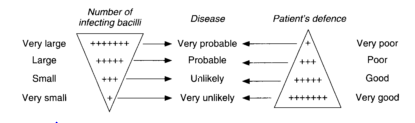

Children who are close contacts of an infectious (usually adult) TB case are at substantial risk of becoming infected with M. tuberculosis and developing active TB. Therefore, we have a low threshold for investigating and starting young children on TB treatment. Contacts with positive sputum on direct smear (i.e. TB visible under the microscope) are much more infectious than those positive only on culture. The closer someone is to the patient and the longer the two spend together, the higher the chance that the person in contact with the patient will inhale TB.Children under 5 years of age and ALL HIV infected children who have been in contact with a sputum smear positive (SSP) TB case, should be referred to the TB clinic for investigation and management
